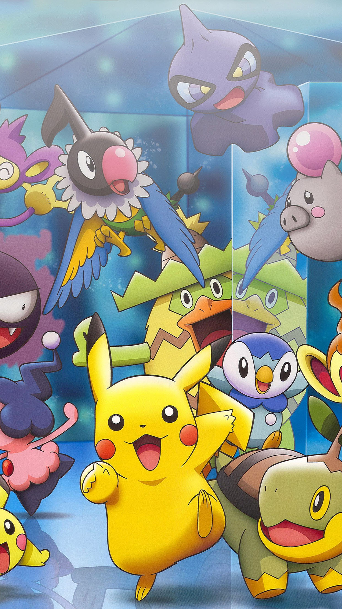

Pokémons são criaturas fictícias do universo da série Pokémon, e eles tem características específicas e ataques, que podem ser usados para batalhas entre pokémons. Além disso, cada pokémon também tem um número na pokedéx, que é uma espécie de católogo de pokémons. Existem quase 900 pokémons considerando todas as gerações do jogo, e nessa grande lista aqui estão presentes todos os pokémons da 1° geração (na minha opinião, a melhor):

1 - Bulbasaur
2 - Ivysaur
3 - Venusaur
4 - Charmander
5 - Charmeleon
6 - Charizard
7 - Squirtle
8 - Wartortle
9 - Blastoise
10 - Caterpie
11 - Metapod
12 - Butterfree
13 - Weedle
14 - Kakuna
15 - Beedrill
16 - Pidgey
17 - Pidgeotto
18 - Pidgeot
19 - Rattata
20 - Raticate
21 - Spearow
22 - Fearow
23 - Ekans
24 - Arbok
25 - Pikachu
26 - Raichu
27 - Sandshrew
28 - Sandslash
29 - Nidoran (fêmea)
30 - Nidorina
31 - Nidoqueen
32 - Nidoran (macho)
33 - Nidorino
34 - Nidoking
35 - Clefairy
36 - Clefable
37 - Vulpix
38 - Ninetales
39 - Jigglypuff
40 - Wigglytuff
41 - Zubat
42 - Golbat
43 - Oddish
44 - Gloom
45 - Vileplume
46 - Paras
47 - Parasect
48 - Venonat
49 - Venomoth
50 - Diglett
51 - Dugtrio
52 - Meowth
53 - Persian
54 - Psyduck
55 - Golduck
56 - Mankey
57 - Primeape
58 - Growlithe
59 - Arcanine
60 - Poliwag
61 - Poliwhirl
62 - Poliwrath
63 - Abra
64 - Kadabra
65 - Alakazam
66 - Machop
67 - Machoke
68 - Machamp
69 - Weepinbell
70 - Bellsprout
71 - Victreebel
72 - Tentacool
73 - Tentacruel
74 - Geodude
75 - Graveler
76 - Golem
77 - Ponyta
78 - Rapidash
79 - Slowpoke
80 - Slowbro
81 - Magnemite
82 - Magneton
83 - Farfetch'd
84 - Doduo
85 - Dodrio
86 - Seel
87 - Dewgong
88 - Grimer
89 - Muk
90 - Shellder
91 - Cloyster
92 - Gastly
93 - Haunter
94 - Gengar
95 - Onix
96 - Drowzee
97 - Hypno
98 - Krabby
99 - Kingler
100 - Voltorb
101 -Electrode
102 - Exeggcute
103 - Exeggutor
104 - Cubone
105 - Marowak
106 - Hitmonlee
107 - Hitmonchan bokser
108 - Lickitung
109 - Koffing
110 - Weezing
111 - Rhyhorn
112 - Rhydon
113 - Chansey
114 - Tangela
115 - Kangaskhan
116 - Horsea
117 - Seadra
118 - Goldeen
119 - Seaking
120 - Staryu
121 - Starmie
122 - Mr. Mime
123 - Scyther
124 - Jynx
125 - Electabuzz
126 - Magmar
127 - Pinsir
128 - Tauros
129 - Magikarp
130 - Gyarados
131 - Lapras
132 - Ditto
133 - Eevee
134 - Vaporeon
135 - Jolteon
136 - Flareon
137 - Porygon
138 - Omanyte
139 - Omastar
140 - Kabuto
141 - Kabutops
142 - Aerodactyl
143 - Snorlax
144 - Articuno
145 - Zapdos
146 - Moltres
147 - Dratini
148 - Dragonair
149 - Draganite
150 - Mewtwo
151 - Mew